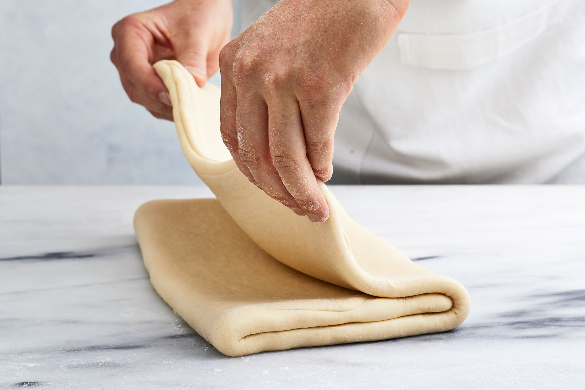
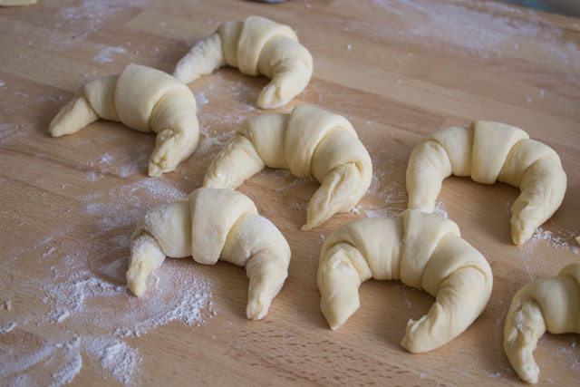
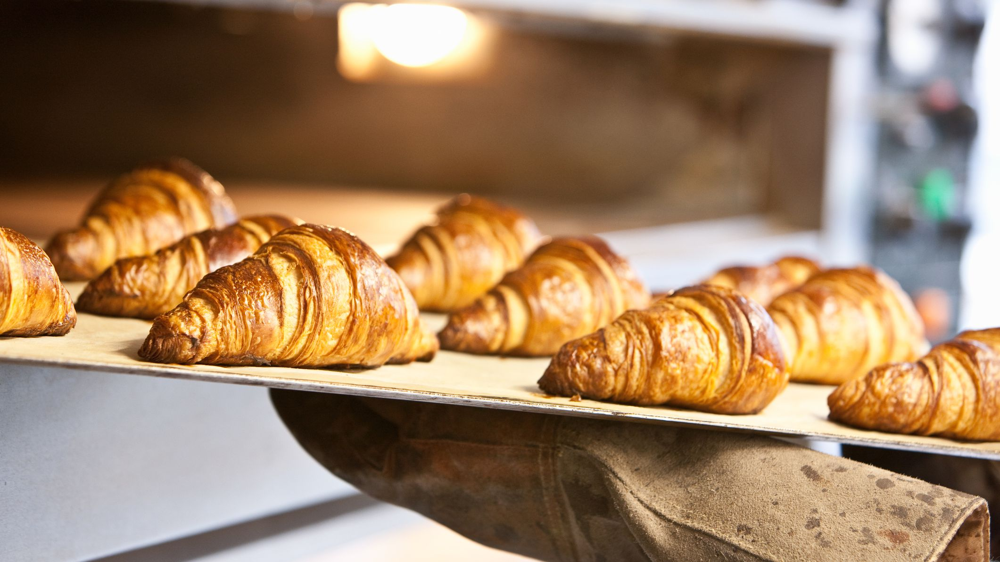

The first step of manufacturing croissants is the "predough" formation. To prepare predough, flour, water, in-dough fat, yeast, salt, and sugar are mixed together in a single step. Typically, croissant predough is mixed in a relatively cool environment, for a longer time than other pastries. The ideal temperature of the dough should be around 19 °C, to best hydrate the ingredients. In comparison to the mixing of bread dough ingredients, pastry predough is considered underdeveloped in that mixing is stopped as soon as the dough appears homogeneous, to allow for further dough development in the next step.
The second step is the lamination process. Lamination is necessary to produce multilayered dough with alternating layers of predough and fat. Generally, there are two methods for folding fat into the dough: the English method and the French method. In the English method, one fold results in two fat layers and three dough layers. After spreading out predough, roll-in fat is flattened to a similar thickness as the predough and spread over two-thirds of the surface of the laminated predough. The exposed third of predough is then folded over half of the roll-in fat, while the other end (one predough and one fat layer) is folded on top. In the French method, one fold results in one fat layer and two dough layers. After spreading out the predough and putting a layer of roll-in fat over the center surface of the dough, the corners of the predough are folded toward the middle of the fat. Croissant dough is typically laminated until 16–50 fat layers are obtained. The optimal number of layers can be determined by balancing certain crumb properties with specific volume. On one hand, a low number of layers yields large specific heights as well as irregular crumb structure with large voids. On the other hand, a large number of relatively thin layers leads to interconnections between different dough layers as well as less dough lift.

After lamination, the dough is formed into its famous crescent shape. First, the laminated dough is cut into triangles of the desired size. The triangles are then rolled with three-and-a-half to four full turns, and finally, the ends of the roll are curved inwards to form a crescent.
The third step is the fermentation process. Croissants are different from other puff pastries in that they include yeast which, during proofing, increase the dough volume. Ideally, the optimum croissant quality is achieved at a yeast level of 7.5%, with a proof time of 60 minutes at 31 °C. The croissants are finished proofing when the dough has expanded two-and-a-half times its original volume.

The fourth step is the baking process. Also known as "pastry lift" or "dough lift", the dough expands as water is converted to steam, thus increasing the pressure between each dough layer. As a result, the croissant dough rises up to yield its characteristic flaky texture. Depending on the type of oven used and specific size of the croissant, the baking time can range from 10 to 20 minutes and the oven temperature can be set anywhere from 165 °C to 205 °C.
The final steps are the cooling and storage of the croissant. Croissants are generally not stored for very long and are typically consumed soon after baking.